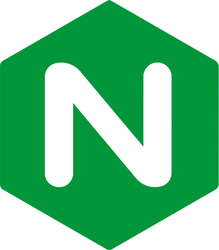
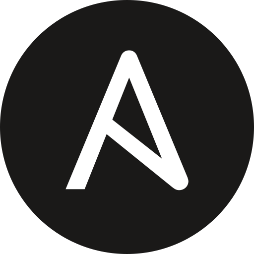
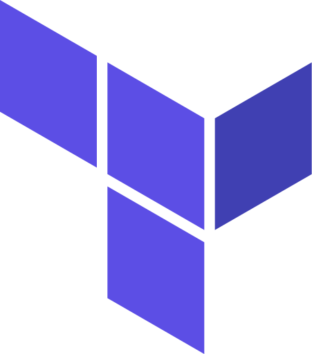
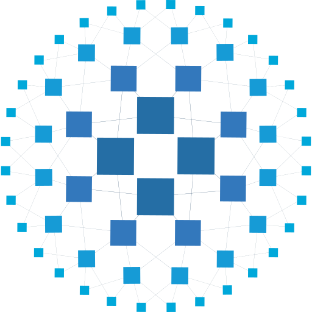
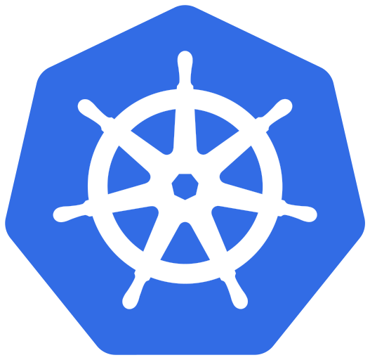
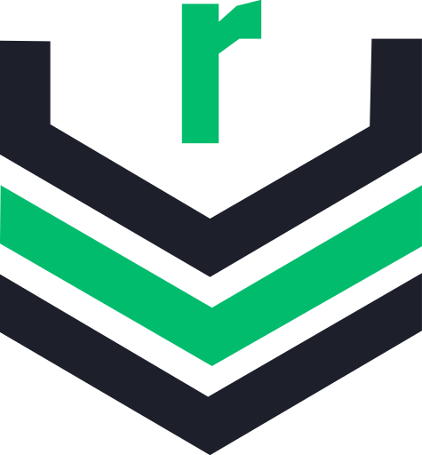
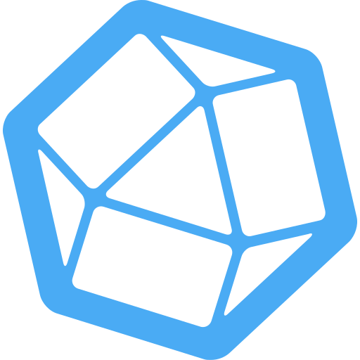
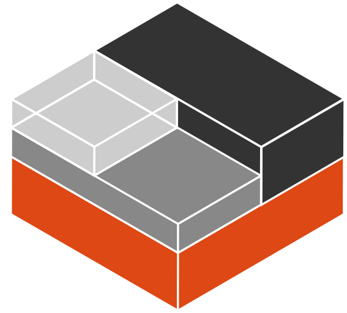
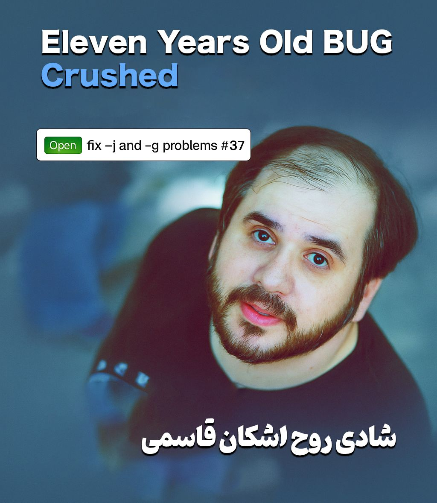

MSc. in the field of Fog Computing
Sharif University of Technology
University Ranking
University Website
I was an M.Sc. Student at Sharif University of Technology (SUT) and am currently a DevOps Engineer at Rosen Bridge. I love GNU & Linux, Software Engineering & Cloud Computing. I am also a dedicated advocate of the DevOps culture.
University Ranking
University Website
University Ranking
University Website
Graduate Research Assistant at Sharif University of Technology in the field of Fog Computing. (Oct 2023 - Mar 2026)
Under the supervision of Dr. Shaahin Hessabi and Dr. Ali Movaghar (Educational Advisor). I worked on the topic "Joint Computation Offloading and Service Caching in Edge Computing Environments" utilizing Wireless Networks, Federated learning, and Deep RL (DQN).
Undergraduate Research Assistant at Isfahan University of Technology in the field of Automating Program Repair. (Dec 2022 - Sep 2023)
Ergo Platform - "rosen-bridge" Project:
I worked for about one year with focus on Docker, Ansible, CI/CD, Proxmox, openvpn, grafana-influxdb-telegraf, starting up Cardano node, etc...
Ergo Platform - "raffle" Project:
Contributed to the raffle project.
Novin dadeh pardazi arses.
Leveraging this experience, I successfully completed a university training course. My primary focus was on Docker, CI/CD, PostgreSQL, and Nginx. Additionally, I delivered two presentations on Nginx and Docker, with the slides available upon request. I also delivered two presentations on Nginx and Docker, for which the slides are available.
Testability (Graduate Course) at SUT under the supervision of Dr. Shaahin
Hessabi.
(Sep 2024 - Feb 2025)
Software Engineering 1 at IUT under the supervision of Dr. Shirin
Baghoolizadeh.
(Sep 2024 - Feb 2025)
Cloud Computing (Graduate Course) at IUT under the supervision of Dr. Zeinab
Zali.
(Jan 2024 - Jul 2024)
Chief of Teacher's Assistants of the Software Testing at IUT under the
supervision of Dr. Shirin Baghoolizadeh.
(Jan 2024 - Jun
2024)
Logical Design and Circuits at SUT under the supervision of Dr. Shaahin
Hessabi.
(Jan 2024 - Jun 2024)
Computer Networking course at SUT under the supervision of Dr. Kambiz
Mizanian.
(Dec 2023 - Feb 2024)
Algorithm Design at IUT under the supervision of Dr. Muhammadreza Heidarpour.
(Feb 2023 - Jul 2023)
Chief of Teacher's Assistants of the Operating systems at IUT under the
supervision of Dr. Zeinab Zali.
(Sep 2022 - Jan
2023)
Operating systems at IUT under the supervision of Dr. Muhammadreza Heidarpour.
(Sep 2022 - Jan 2023)
Chief of Teacher's Assistants of the Fundamentals of programming with C
language at IUT under the supervision of Dr. Samaneh Hosseini Semnani.
(Sep 2022 - Dec 2022)
Computer networks at IUT under the supervision of Dr. Muhammadreza Heidarpour.
(Feb 2022 - Jul 2022)
Chief of Teacher's Assistants of the Advanced programming course that about
Object-Oriented Programming using C++ and QT Framework at IUT under the supervision of
Dr. Shirin Baghoolizadeh.
(Feb 2022 - Jul 2022)
Data Structures at IUT under the supervision of Dr. Samaneh Hosseini Semnani.
(Sep 2021 - Jan 2022)
Fundamentals of programming with C language at IUT under the supervision of
Dr. Samaneh Hosseini Semnani.
(Nov 2020 - Feb
2021)
Supervisor of Computer Networks Laboratory of 401-2 & 403-2 semester at IUT.
(Feb 2023 - Jun 2023 & Feb 2024 - May 2024)
Our team also outlined the instructions and pre-report for the lab experiments, as well as the lab project. You can view all the related documentation at the link below.
Supervisor of Operating System Laboratory of 401-1 semester at IUT.
(Sep 2022 - Dec 2022)
Supervisor of the Linux workshop that organized by Isfahan University of
Technology Scientific Society of Computer Engineering(IUT CESSA).
(Feb 2022 - Mar 2022)
LPIC1 workshop mentor of the Linux LPIC1 workshop that taught by Mr. Saleh
Mohammadi.
(Feb 2021 - May 2021)
IUTCESSA Chairperson (Oct 2021 - Dec 2022)
As the head of the Computer Engineering Student Scientific Association at Isfahan University of Technology, I led the team to be recognized as the best scientific association in the country in the competitive section In a festival called "حرکت".
APACHEE Club Central Council Member (Feb 2021 - Oct 2021)
As a member of the APACHEE Club and congress at Isfahan University of Technology, I played a pivotal role. Additionally, I served as the Steganography Workshop Supervisor at the Conference of the Iranian Crypto Society 2021.
IUTCPC Technical Team Leader of Isfahan University of Technology Collegiate Programming Contest 2021.
Advanced experience containerizing applications.
Advanced automated workflows in Github.

Intermediate web server and reverse proxy setup.
Extensive automation using bash, python, and batch scripts.

Intermediate automation using playbooks.

Basic understanding of Infrastructure as Code.
Version management and changelog generation.

Basic understanding of load balancing.
Used for virtualization management and cluster setup.

Started learning k8s; familiar with basic deployments.

Basic usage of Sonatype Nexus as an artifact repository.
Academic familiarity from university courses.
Academic familiarity from university courses.
Extensive research experience and practical implementation.
Intermediate experience with cloud concepts and deployment.
Solid academic foundation.
Passed university course.
Passed university course.
Research topic on computation offloading in edge environments.
Intermediate experience as a TA for various courses.
Basic knowledge and workshop supervision experience.
Passed university course.
Basic knowledge in machine learning and reinforcement learning.
Intermediate experience writing scripts and applications.
Solid understanding of core principles.
Basic web scraping scripts.
Intermediate understanding and system-level programming.
Basic knowledge for UI development.
Configured scraping jobs and alerts.
Extensively used to gather host metrics.
Used to probe endpoints for external monitoring.
Extract metrics from JSON APIs.
Deployed and maintained self-hosted instance.

Storing time-series data in limited scope.
Dashboards creation and data visualization.
Implemented log aggregation in Grafana.
Configured telemetry pipelines.
Basic usage for collecting metrics.
Intermediate experience administering Linux systems.
Intermediate system security hardening.

Deployed and managed isolated Linux containers.
Basic experience with firewall routing.

یادگیری دواپس ...more
اینجا شعرامو مینویسم. اگه دوست داشتین به
.دوستاتونم معرفی کنین
آسمان
،زمان و زمانه گر غلط بود
دل را که مگر شکی به سر بود؟

دانستنیهای جالب:
🔹 میدونستین کبیسههای ۵ ساله داریم؟ 😂️️
🔹 میدونستین کبیسههای شمسی و میلادی الگوشون با هم فرق داره و همین الگو از جولین به گریگوری برای
میلادی تغییر کرده؟ 😂️️
🔹 میدونستین تابع mktime که سیستمی هستش برای قبل epoch time (ینی قبل 1970/1/1) زمان منفی
برمیگردونه؟ 😂️️
◾ جالبتر اینکه میدونستین واسه زمان قبل 1900 تعداد ثانیهی گذشته رو نه تنها منفی بر نمیگردونه
بلکه 0 برمیگردونه؟ 😂️️
ما همه اینا و کلی رندوم فکت دیگه رو حین باگ فیکس کردنها متوجه شدیم (این بین با wikifunction و
تاریخ پهلوی هم آشنا شدم).
🔁 پروژهی persiancal الان فورک کد اشکانه، و توسعهی ابزارهای تاریخ شمسی از اینجا ادامه پیدا
میکنه.